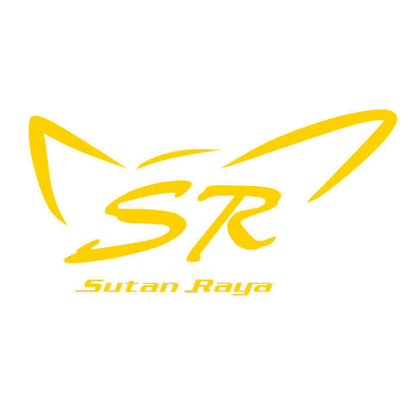

<!DOCTYPE html>
<html lang="id">

<head>
    <meta charset="UTF-8" />
    <meta name="viewport" content="width=device-width, initial-scale=1.0" />
    <title>Sutan Raya - 360 Viewer (Tanpa Smoothing)</title>

    <script src="https://cdn.tailwindcss.com"></script>
    <link rel="stylesheet" href="https://cdn.jsdelivr.net/npm/pannellum@2.5.6/build/pannellum.css" />
    <script src="https://unpkg.com/vue@3/dist/vue.global.js"></script>
    <script src="https://cdn.jsdelivr.net/npm/pannellum@2.5.6/build/pannellum.js"></script>
    <meta property="og:image" content="https://i.pinimg.com/736x/d4/c0/2a/d4c02ab6ea1144040cd0cb1174f39b94.jpg" />
    <meta property="og:description"
        content="Rasakan pengalaman mewah armada Sutan Raya dengan tur virtual 360 derajat. Jelajahi interior kendaraan kami yang nyaman dan modern." />
    <meta property="og:title" content="Sutan Raya - Tur Virtual Armada Mewah" />

    <style>
        :root {
            --sutan-dark: #121212;
            --sutan-gold: #d4af37;
        }

        body {
            background-color: var(--sutan-dark);
            color: white;
            font-family: "Plus Jakarta Sans", sans-serif;
        }
    </style>
</head>

<body class="antialiased">
    <div id="app"></div>

    <script>
        const {
            createApp,
            ref,
            onMounted,
            onUnmounted,
            watch
        } = Vue;

        createApp({
            setup() {
                const isGyroSupported = ref(false);
                const isGyroActive = ref(true);
                const viewer = ref(null);
                const initialYaw = ref(null);

                const handleDeviceOrientation = (event) => {
                    if (!viewer.value) return;

                    if (initialYaw.value === null) {
                        initialYaw.value = event.alpha;
                    }

                    // Tanpa smoothing - langsung gunakan nilai dari sensor
                    const yaw = event.alpha - initialYaw.value;
                    const pitch = event.beta - 90;

                    viewer.value.setYaw(yaw, false);
                    viewer.value.setPitch(pitch, false);
                };

                const checkSupportAndActivate = async () => {
                    if (typeof DeviceOrientationEvent !== 'undefined' &&
                        typeof DeviceOrientationEvent.requestPermission === 'function') {
                        try {
                            const permission = await DeviceOrientationEvent.requestPermission();
                            if (permission === 'granted') {
                                isGyroSupported.value = true;
                            }
                        } catch (error) {
                            console.error('Error requesting gyro permission:', error);
                        }
                    } else if ('DeviceOrientationEvent' in window) {
                        isGyroSupported.value = true;
                    }
                };

                const activateGyro = () => {
                    isGyroActive.value = true;
                    initialYaw.value = null; // Reset initial yaw saat mengaktifkan gyro
                };

                const deactivateGyro = () => {
                    isGyroActive.value = false;
                };

                onMounted(() => {
                    // Initialize Pannellum viewer
                    viewer.value = pannellum.viewer("panorama-container", {
                        type: "equirectangular",
                        panorama: "image2.jpg",
                        autoLoad: true,
                        autoRotate: -2,
                        showControls: true,
                        compass: true,
                        orientationOnByDefault: false
                    });

                    checkSupportAndActivate();
                });

                onUnmounted(() => {
                    if (viewer.value) {
                        viewer.value.destroy();
                    }
                });

                // Watch for changes in gyro support and activation
                watch([isGyroSupported, isGyroActive], ([supported, active]) => {
                    if (supported && active) {
                        window.addEventListener('deviceorientation', handleDeviceOrientation);
                    } else {
                        window.removeEventListener('deviceorientation', handleDeviceOrientation);
                    }
                }, {
                    immediate: true
                });

                return {
                    isGyroSupported,
                    isGyroActive,
                    activateGyro,
                    deactivateGyro
                };
            },
            template: `
                <div class="min-h-screen flex flex-col items-center justify-center p-4">
                    <header class="text-center mb-8">
                        
                        <h1 class="text-3xl font-bold text-[var(--sutan-gold)] tracking-wider">
                            Luxury Travel
                        </h1>
                        <p class="text-gray-400">
                            Rasakan pengalaman mewah armada kami.
                        </p>
                    </header>

                    <div class="w-full max-w-5xl h-[60vh] rounded-lg shadow-2xl overflow-hidden border-2 border-[var(--sutan-gold)]">
                        <div id="panorama-container" class="h-full w-full"></div>
                    </div>

                    <div v-if="isGyroSupported" class="mt-6 flex justify-center space-x-4">
                        <button 
                            @click="activateGyro" 
                            :disabled="isGyroActive" 
                            :class="{
                                'font-bold py-2 px-6 rounded-lg shadow-lg transition-all duration-300': true,
                                'bg-gray-600 text-gray-400 cursor-not-allowed': isGyroActive,
                                'bg-green-600 text-white hover:bg-green-500': !isGyroActive
                            }"
                        >
                            Aktifkan Giroskop
                        </button>
                        <button 
                            @click="deactivateGyro" 
                            :disabled="!isGyroActive" 
                            :class="{
                                'font-bold py-2 px-6 rounded-lg shadow-lg transition-all duration-300': true,
                                'bg-gray-600 text-gray-400 cursor-not-allowed': !isGyroActive,
                                'bg-red-600 text-white hover:bg-red-500': isGyroActive
                            }"
                        >
                            Matikan Giroskop
                        </button>
                    </div>

                    <footer class="text-center mt-8 text-gray-500 text-sm">
                        <p>&copy; 2025 PO. Sutan Raya. All rights reserved.</p>
                    </footer>
                </div>
            `
        }).mount('#app');
    </script>
</body>

</html>